Version 1.1.1 cannot read the new file. It will not say so
politely — it will claim the register is damaged and show old figures as if they
were current. Your existing data is safe and opens with the same numbers.
Before anything
What the store desk sees
01
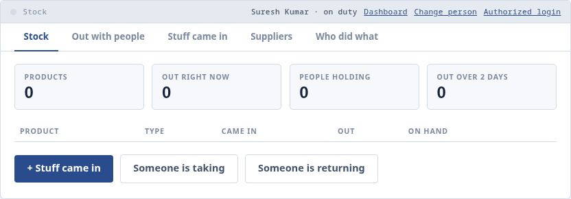
The ordinary Stock screen on a brand-new register, so the counts are still zero. Nothing here has changed for the store desk — same tabs, same words, no login. The only new thing is the small Authorized login link in the bar at the top.
Getting in
Setting up the locked area, once
02
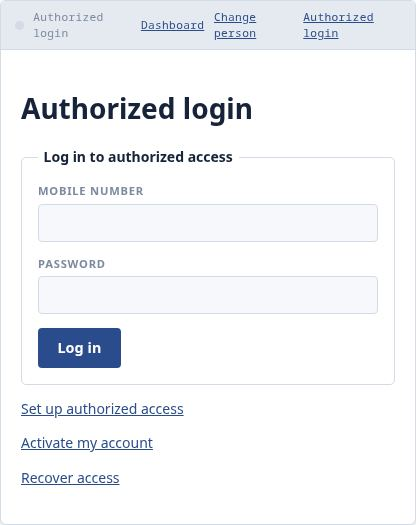
Pressing Authorized login opens this. The very first time, nobody has an account yet, so you choose Set up authorized access.
03
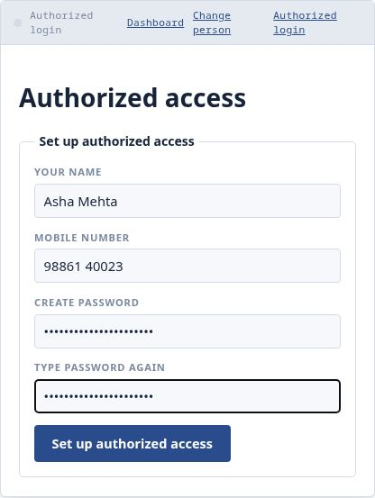
The first person gives their name, mobile number and a password they choose themselves. This person becomes the administrator.
04
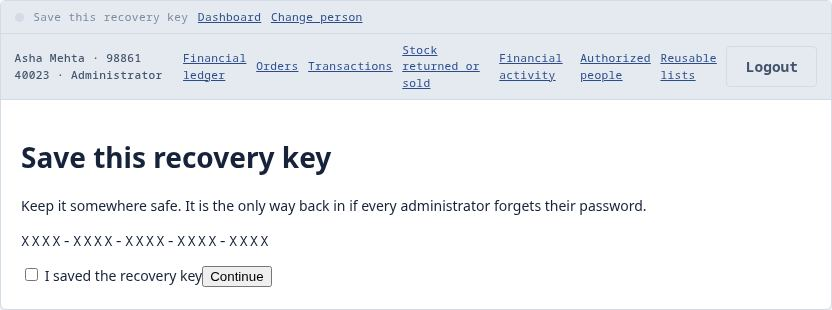
This screen appears once and never again. Write the recovery key on paper and keep it somewhere safe. It is the only way back in if everybody forgets their password. (The real key is hidden in this picture.)
05
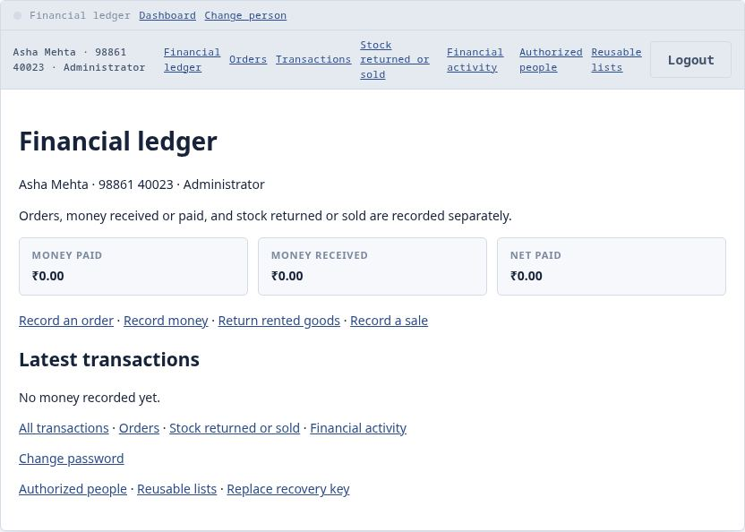
The financial ledger, before anything is recorded. The bar underneath the ordinary one is the protected menu, and it says who is logged in. Logout is always there.
The other people
Everyone gets their own password
06
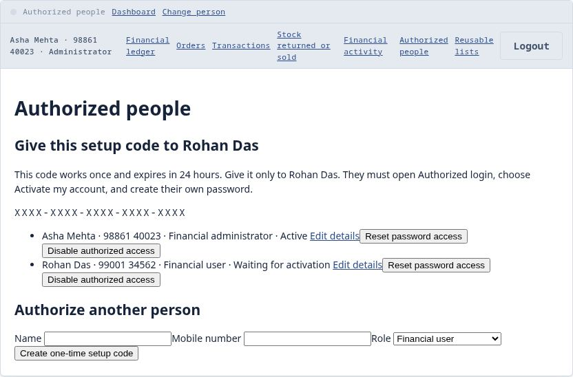
The administrator adds the other people who are allowed in. Each gets a one-time code that works once and expires in 24 hours. They use it to choose their own password — nobody shares one. (The real code is hidden here.)
Orders
What you agreed to take
07
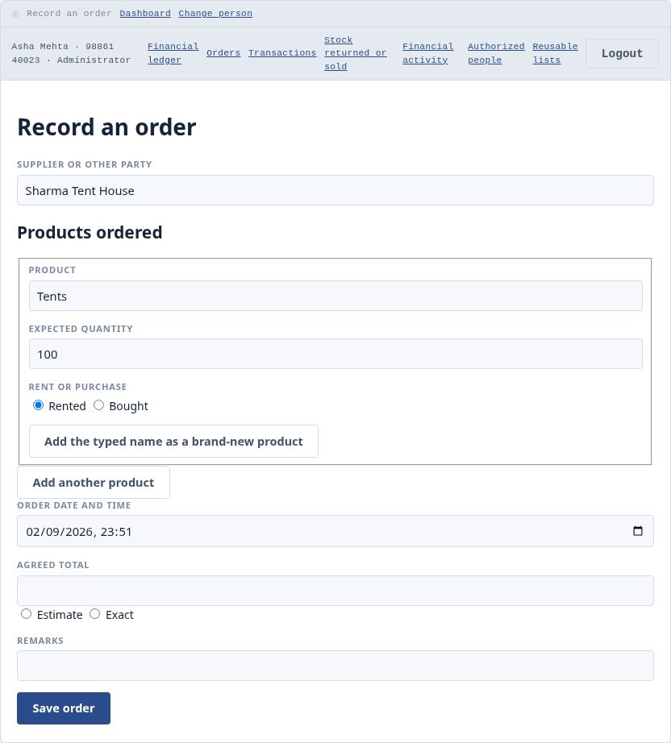
Recording an order: what you agreed to take, before anything arrives. The supplier box remembers every name anyone types. A product that is not on the list yet can be added right here.
08
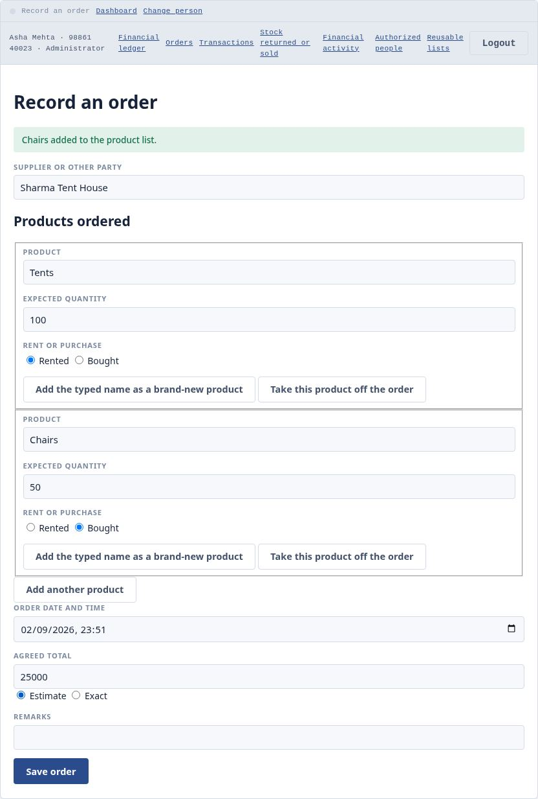
One order can list several products, each rented or bought separately. The agreed total is optional, and you say whether it is an estimate or exact.
09
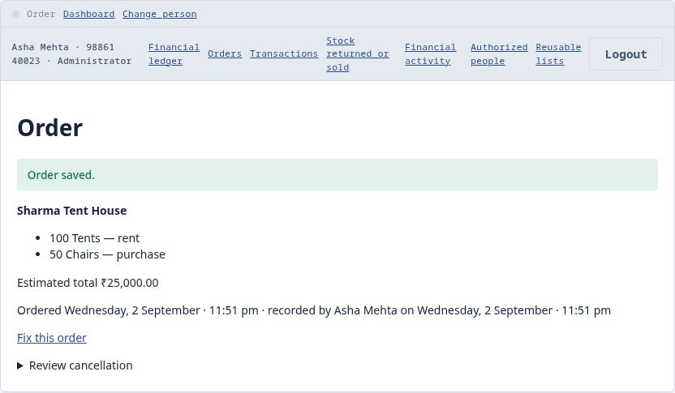
The saved order. It is only what was agreed — it does not change your stock by itself.
10
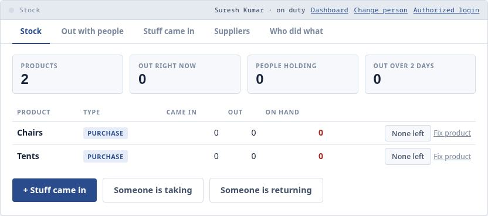
The new product appears on the ordinary Stock screen at zero, so the desk can receive it normally. Nothing about the supplier, the money or the order shows here.
The goods arrive
The desk works exactly as before
11
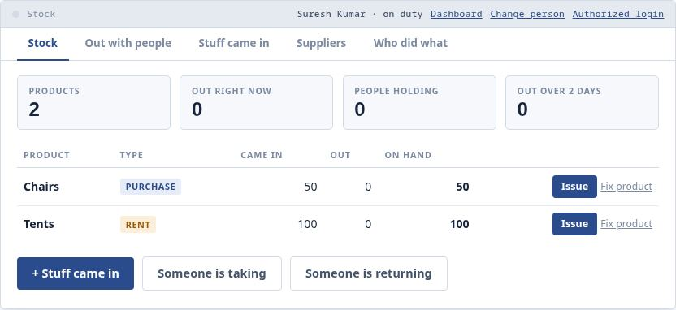
The desk records what actually arrived, exactly as it always has — 70 tents, then 30 more, then the chairs. It never has to know an order exists.
Money
Paid and received, whenever it happens
12
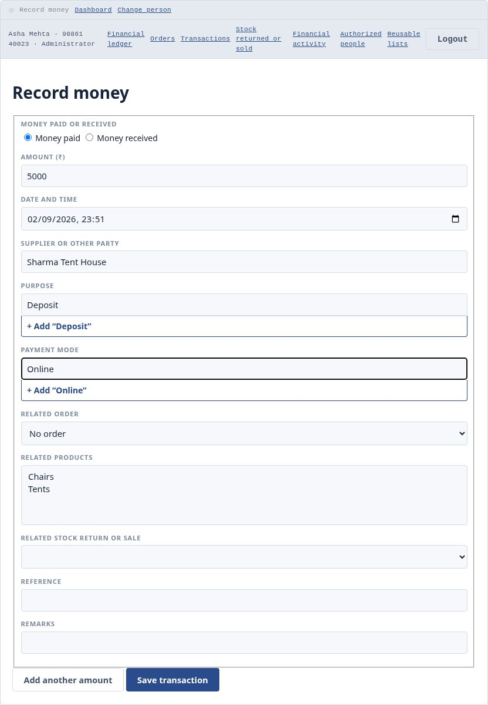
Recording money. Every entry says who it was with, what it was for and how it was paid. Those three lists remember themselves — type a new supplier or purpose once and it is there for everyone next time.
13
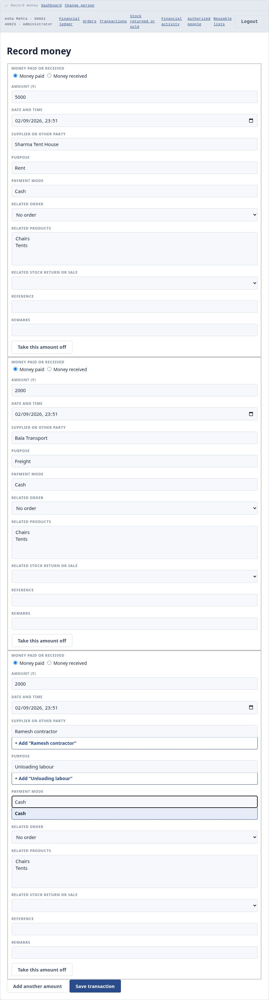
One settlement can be split. Paid ₹9,000 covering the rent, the freight and the labour? Press Add another amount and record all three together — they are saved as three separate entries, or none at all.
The journal
Every entry, and a page you can print
14
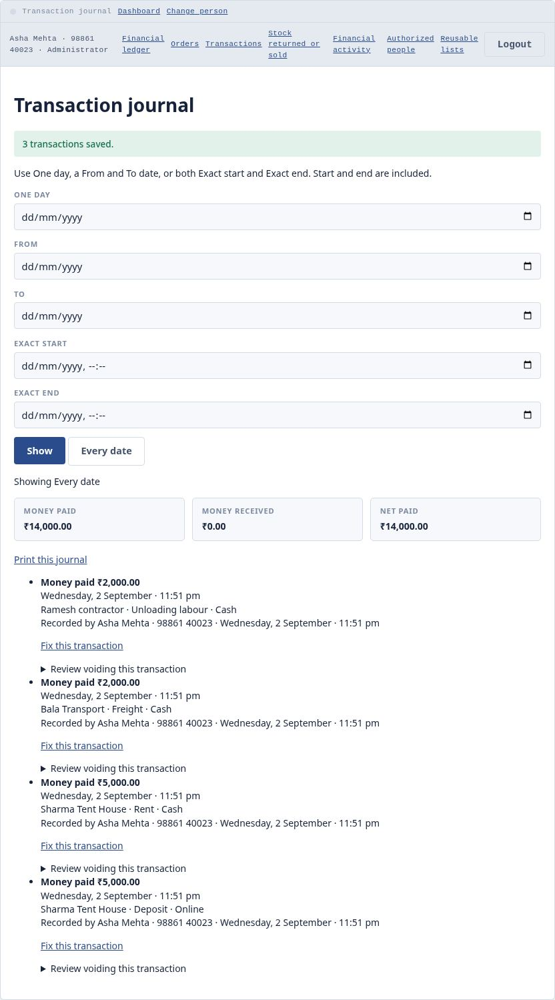
The transaction journal: every entry, newest first, with running totals of money paid, money received and the difference.
15
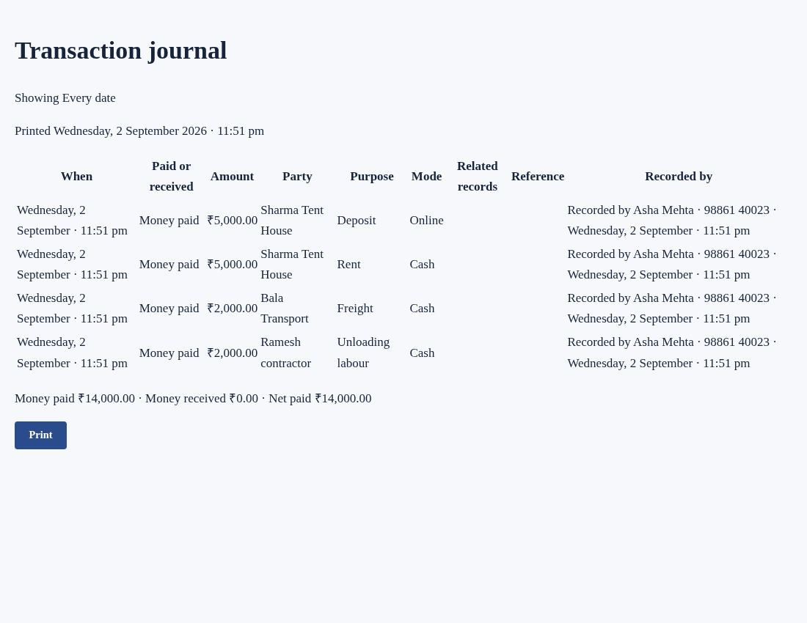
The printable version. Only the entries, oldest first, with none of the buttons. You can narrow it to one day, a range of dates, or an exact stretch of time first.
End of the event
Goods going back, and goods sold
16
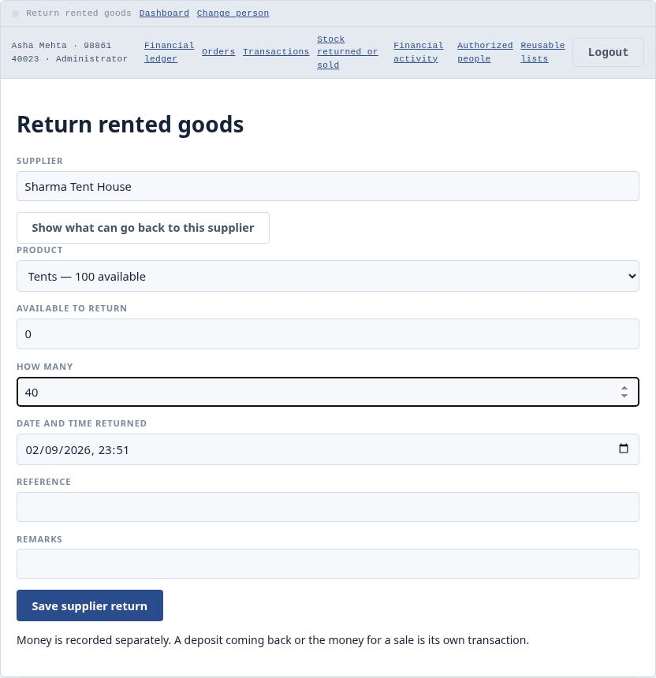
Sending rented goods back. Choose the supplier, press the button, and it tells you the most that can go back — you can never send back more than they actually sent you, or more than is in the store.
17
Stock drops straight away, and stays right even after the program is closed and reopened with nobody logged in.
18
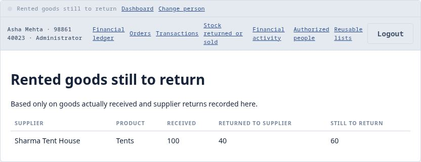
What is still to go back, per supplier and product. It counts real goods that actually arrived — not orders, not deposits.
19
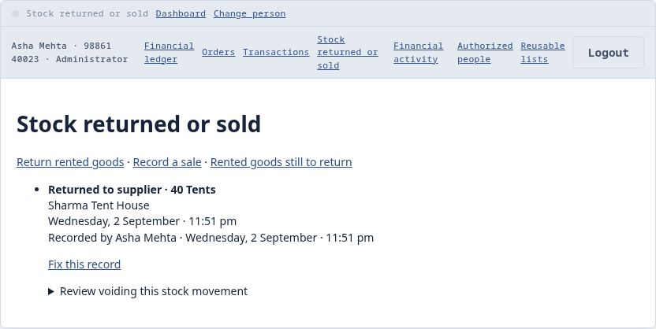
Everything that has left the store, returns and sales together. Money is kept separate on purpose: a deposit coming back is its own entry, recorded whenever it actually arrives.
Everything is written down
Nobody can quietly change anything
20
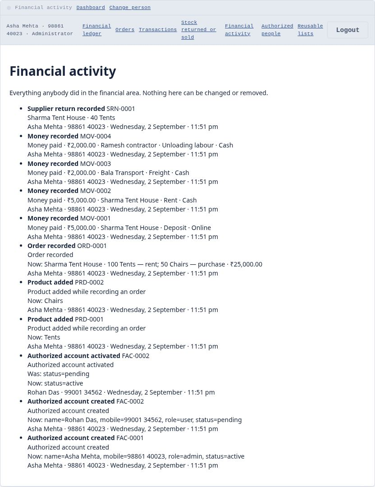
Financial activity: everything anybody did, with their name, mobile number and the time. Nobody can edit or delete this, not even the administrator.
Nothing changed for the desk
Same five tabs, same screens, same words, no login. If you only record goods
coming in and going out, your day is exactly as it was.
Money is not readable in the file
Suppliers, amounts, purposes and remarks are encrypted inside the register file.
Opening it in Notepad shows the stock records and nothing about money.
Goods and money stay separate
Sending goods back does not create a refund, and a refund does not move stock.
They happen at different times, so they are recorded separately.
Screens captured from version 1.2.1 running on a real machine. The
recovery key and the one‑time setup code are hidden in the two pictures that show
them.